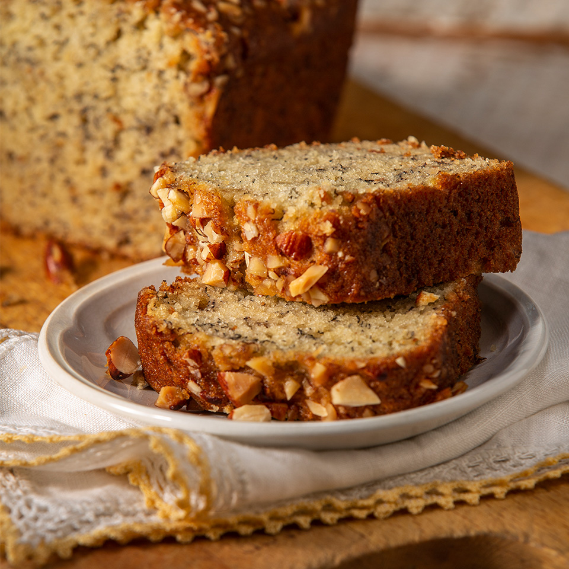

Banana Bread

Description
I always buy bananas and I dont usually get through the before some ripen too far. That means banana bread time! There was a time when i made bana bread evry sunday befre the week started and it always made my kitchen smell good and lifeted my spirits.
This is a simple recipe that you can follow in your sleep.
Ingredients
- 1 cup granulated sugar
- 1/2 cup butter
- 2 large eggs
- 3 ripe bananas, mashed
- 1 Tbsp milk
- 1 tsp vanilla extract
- 1 tsp cinnamon
- 2 cups all purpose flour
- 1 tsp baking powder
- 1 tsp baking soda
- 1 tsp salt
Steps
- Preheat oven to 325 degrees and grease 9x5 loaf pan
- Mix together dry ingredients, set aside
- Mash bananas, add milk and vanilla then set aside
- Cream sugar and butter
- Add eggs one at a time
- Add mashed bananas
- Add dry ingredients
- Pour batter into pan and bake for 1 hour, somtimes 80 minuets
- Enjoy!